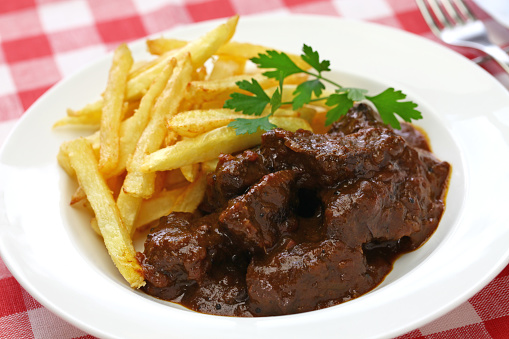

Home
Flemish Stew

Description
Flemish Stew is one of my alltime favourite winter dishes. It reminds my of my birth country (Belgium) and more importantly, it's absolutely delicious, both flavour-wise and texture-wise.
A word of warning; this is not a weekday recipe. Flemish Stew is something you typically make in the weekend, because the meat has to be on the hob for at least 4 hours straight. That may sound long, however you can make this in big batches and freeze it in so it provides you with multiple tasty meals.
Ingredients
- Stewing Beef (1,5kg)
- Brown Onione (1)
- Flour (100g)
- Seedy Brown Bread (a few slices)
- French or English mustard
- Beef Stock (1l)
- Dark Beer (e.g. Leffe Bruin, Orval, Chimay Blue, Rochefort.. if you can get your hands on good Belgian beers. If not, try to find a strong sweet dark beer.
- Potatoes (500g)
- Cloves
- Laurel
- Butter
- Mayonaise
Steps
- In a big bowl, mix the stewing beef with salt & flour. Let the meat rest for 10 minutes.
- Heat a pan to the hottest temperature you can and melt some butter in it. Then fry your meat in batches, making sure to not fill up your pan too much (otherwise the meat will cook instead of frying). You can fry it a bit brown / crispy.
- Once all the meat has been fried, fry the chopped onion in a big pot for roughly 10 minutes.
- Add the meat to the onions and also add the Belgian beer(s), laurel & cloves. Season with pepper & salt and put a lid on.
- Once the beer has evaporated, add Beef Stock. Also add a slice of dark brown bread and spread it with mustard; and add that to the stew.
- Let your stew cook for at least 4 hours (5 is even better). Regularly check to make sure there's still enough liquid in the pot, and add stock and / or beer if not.
- Half an hour before the stew is ready, cut your potatoes into wedges (leave the skin on) and start boiling sunflower oil in a pan.
- About 15 minutes before the stew is ready, fry your potato wedges in the sunflower oil until they're crispy.
- Serve stew and potato wedges with a dollop of mayonaise on the side.